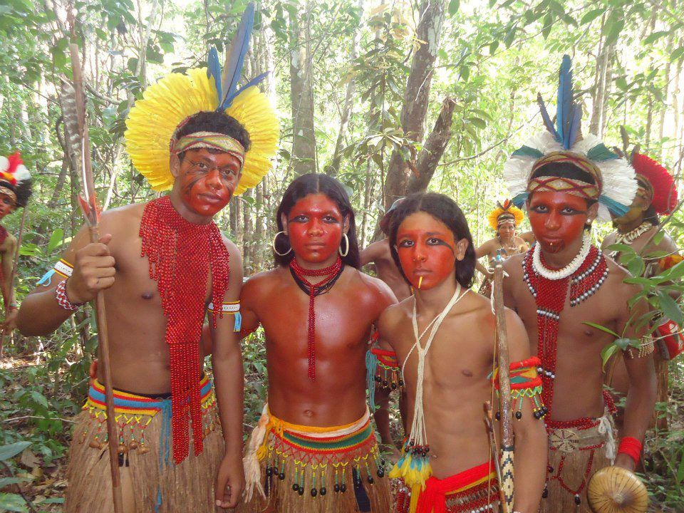
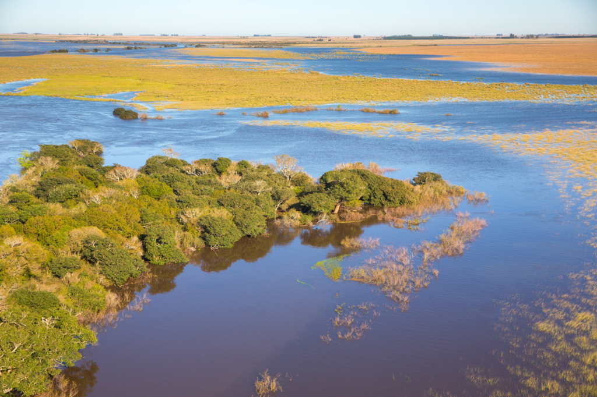
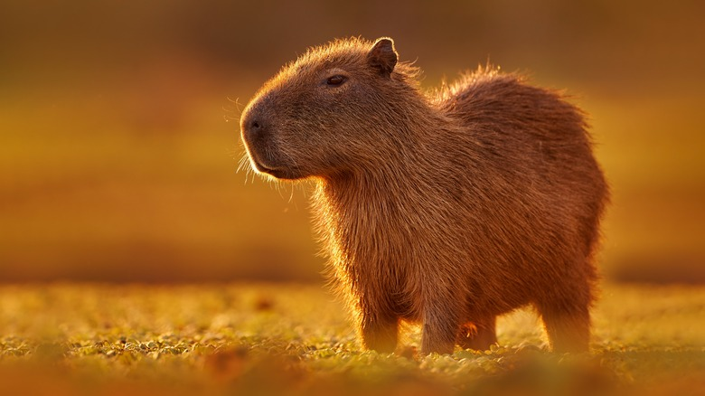
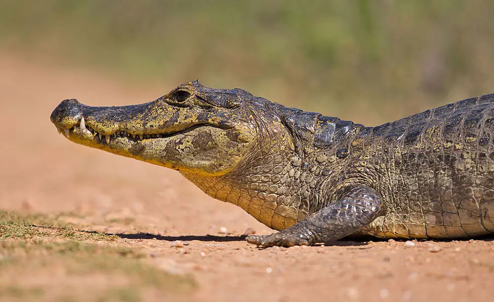
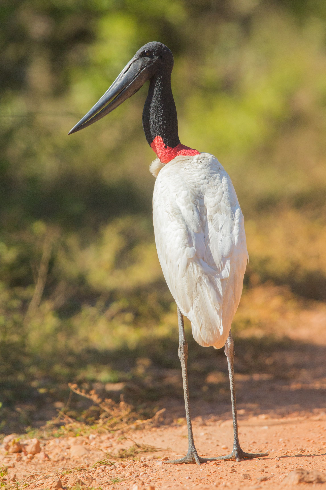
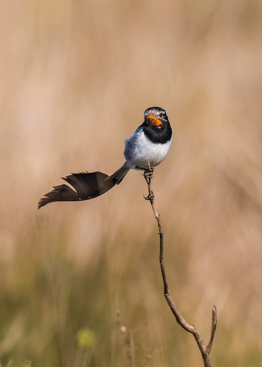
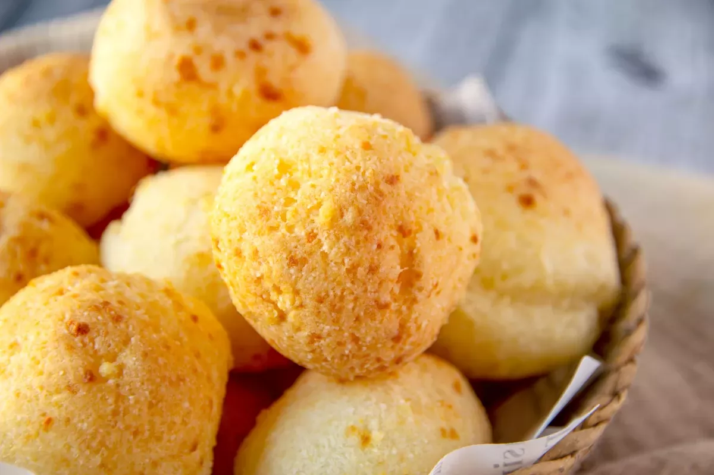

Indigenous Guaraní people lived here for centuries, it was recently restored by the Tompkins Conservation.
Welcome to Iberá Wetlands

The second-largest wetlands in the world, perfect for spotting capybaras, caimans, and exotic birds.
This is a "Trophic Rewilding" lab. It’s one of the most successful projects in the world where they’ve successfully reintroduced Giant Otters and Jaguars after they were extinct in the region for 70 years.
think of it as a giant sponge that filters the Paraná River
The Zen Master: Capybaras

The Capybara (Hydrochoerus hydrochaeris) is the world’s largest rodent. They are 'semi-aquatic,' meaning they have evolved partially webbed feet.
They are the ultimate 'extroverts' of the animal kingdom. They live in social groups of 10 to 40. Because they are so calm, you will often see birds (like the Cattle Tyrant) sitting on their heads using them as mobile hunting platforms for bugs!
In recent years, they’ve become a global meme for being 'chill,' but in Argentina, they’ve become 'political activists.' As urban development encroached on their wetlands (specifically in Nordelta, Buenos Aires), the capybaras 're-invaded' the gated communities, sparking a massive national debate about land rights and habitat loss.
Expect to see them lounging in the sun like giant potatoes. They are most active at dawn and dusk.
The Armor: Yacaré Caimans

There are two main species here: the Overo (Broad-snouted) and the Negro (Black). Unlike their aggressive crocodile cousins in Australia, Yacarés are generally 'chill'—unless you happen to be a fish or a snail.
They are ectothermic (cold-blooded), so you’ll see them on the 'embalsados' (floating islands of vegetation) with their mouths wide open. That’s not a threat! It’s thermoregulation—they are letting heat escape through the soft tissue in their mouths.
In the 1980s, they were hunted nearly to extinction for their skins. Thanks to strict conservation and 'ranching' programs (where locals collect eggs, hatch them, and release the healthy juveniles), the population has absolutely exploded. They are now a conservation success story!
The Avian Technicolor: Exotic Birds
Iberá is an 'IBA' (Important Bird Area) with over 350 species.

The Jabiru Stork. It’s the tallest flying bird in South America, with a massive 2.8 meter wingspan and a bright red neck 'pouch' that expands when they are excited.

Look for the Strange-tailed Tyrant. The males have two absurdly long tail feathers that they use for 'display flights' to impress females—it’s like watching a tiny kite fly itself!
You’ll see three types (Ringed, Amazon, and Green), each occupying a different 'niche' based on the size of fish they catch. It’s a perfect example of Resource Partitioning.
The "Wetland Soul Food" Recipe: Chipá

You can't talk about the Iberá region without talking about the Guaraní influence on food. Since the wetlands are in the Corrientes province, the staple is Chipá.
This is a 19th-century fusion of indigenous Mandioca (Cassava) starch and European cheese brought by the Jesuits.
Because it uses Cassava starch instead of wheat, it’s naturally gluten-free! The starch molecules expand when heated, creating a hollow, airy, 'chewy' center.
Ingredients
500g Cassava Starch, 3 Eggs, 100g Butter, 250g Hard Cheese (like Sardo), 250g Semi-soft Cheese (like Pategrás), and a splash of orange juice (the secret acidic catalyst!).
Process
Mix until you have a dough, roll into small balls, and bake at 200 °C until golden.
How to eat
Eat them hot! If they cool down, they turn into 'cannonballs' (geological density!), but when fresh, they are the perfect snack for a boat safari.
The "Embalsados" Warning
Tell your visitors that the ground they walk on isn't always "ground." It's often a thick layer of floating plants and roots. If you jump, the whole "island" might ripple like a waterbed!